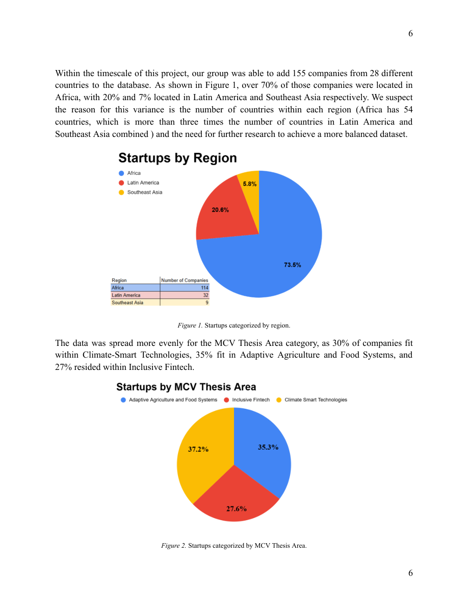

PROYECTO 04A · FUTURE17
Identificar soluciones
de tecnología climática.
Proyecto de consultoría en equipo para Mercy Corps Ventures.
Investigación y clasificación
El encargo
Apoyar la identificación y clasificación de soluciones emergentes de tecnología climática en África, América Latina y el Sudeste Asiático, según las áreas de interés de Mercy Corps Ventures.
Mi contribución
Investigué empresas emergentes, las clasifiqué según los criterios del proyecto y analicé el conjunto de datos para identificar patrones regionales, cobertura sectorial y áreas que requerían más investigación.
Método
El equipo consultó informes sectoriales, fuentes académicas, recursos gubernamentales y de ONG, y plataformas de información empresarial. Clasificó empresas por geografía, sector, financiación y alineación con las áreas de Mercy Corps Ventures y su marco Preparar, Adaptar y Recuperar.
Entregables del equipo
- Base de Airtable con 155 empresas de 28 países, según el informe final.
- Análisis de cobertura regional y sectorial y recomendaciones para ampliar la investigación.
- Informe y presentación finales, junto con el prototipo de asistente Maya Campos desarrollado por el equipo.
Mi papel se centró en investigación, clasificación y análisis. La base y el asistente son entregables colectivos; no me atribuyo su autoría exclusiva ni el desarrollo del asistente.
Hallazgos y límites
La investigación mostró una cobertura regional desigual y oportunidades para ampliar países y subsectores poco representados. La muestra no es un censo completo del mercado. Las recomendaciones y capacidades del prototipo no equivalen a impacto organizativo demostrado.
MATERIALES DEL PROYECTO
Ver la clasificación y el análisis
Páginas del informe final del equipo con la clasificación regional, sectorial y según el marco del proyecto. Mi contribución fue investigación, clasificación y análisis.
Documento original en inglés. La vista previa conserva el idioma del material de origen.

